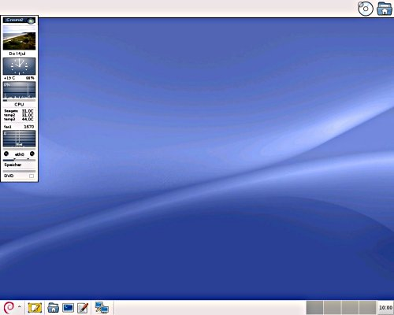

Eigene Desktopumgebung
Dieser Artikel wurde für die folgenden Ubuntu-Versionen getestet:
Dieser Artikel ist größtenteils für alle Ubuntu-Versionen gültig.
Zum Verständnis dieses Artikels sind folgende Seiten hilfreich:
 Neben den im Artikel Desktop aufgezählten Desktop-Umgebungen, die ihre eigenen Werkzeuge wie Fenstermanager, Panel, Fensterumschalter und eventuell Applets für ihr Panel mitbringen, gibt es viele alleinstehende Fenstermanager. Diese haben ihre eigenen Qualitäten.
Neben den im Artikel Desktop aufgezählten Desktop-Umgebungen, die ihre eigenen Werkzeuge wie Fenstermanager, Panel, Fensterumschalter und eventuell Applets für ihr Panel mitbringen, gibt es viele alleinstehende Fenstermanager. Diese haben ihre eigenen Qualitäten.
Eine eigene Desktop-Umgebung mit einem Fenstermanager, einem Panel und einem Dateimanager kann man sich leicht nach den eigenen Vorlieben zusammenstellen. Man sollte aber berücksichtigen, dass auch grafische Programme wie ein Webbrowser, ein Textverarbeitungsprogramm etc. Arbeitsspeicher benötigen. In der Praxis sind dann mind. 512 MiB RAM empfehlenswert. Das installierte Grundsystem wird zusammen mit der grafischen Oberfläche ca. 1,5 GiB auf der Festplatte benötigen.
Grundlagen zur Installationen einer eigenen Desktop-Umgebung enthält der Artikel Minimalinstallation.
Komponenten¶
Die folgenden Programmkomponenten bilden das Grundgerüst einer eigenen Desktop-Zusammenstellung.
XServer¶
Sobald das Grundsystem installiert ist, wird zunächst der XServer über das Paket xorg aufgespielt. Dieser bildet die Grundlage einer grafischen Oberfläche. Nützlich ist grundsätzlich auch ein grafisches Terminal, das man über das Paket xterm erhält.
Fenstermanager¶
Für ein schlankes System bieten sich an:
IceWM, Openbox, Fluxbox oder ein anderer Fenstermanager
Panel¶
Im genannten Artikel Fenstermanager und auch im Artikel GNOME Panel werden viele Funktionen eines Panels beschrieben. Eine Übersicht der verschiedenen Programme ist im Artikel Desktop zu finden. Alternativ kann man auch einen Anwendungsstarter nutzen (diese sind im gleichen Artikel beschrieben).
Dateimanager¶
Irgendeine Art von Dateimanagement muss betrieben werden. Meist benutzt man dafür einen Dateimanager, stattdessen könnte allerdings auch ein Terminal verwendet werden.
Netzwerk-Manager¶
Speziell bei der Nutzung von WLAN ist ein Netzwerk-Manager sehr praktisch. Empfehlenswert sind der NetworkManager oder Wicd. Bei Nutzung eines kabelgebundenen LANs kann ein solcher entfallen, in dem man das Netzwerk statisch konfiguriert (siehe interfaces).
Umgebung starten¶
Normalerweise ist auch ein Programm für eine grafische Anmeldung (siehe Displaymanager) installiert. Wenn man ohne grafische Anmeldung auskommt, kann man wieder ein wenig Hauptspeicher einsparen. Dann muss man nach dem Login die grafische Oberfläche manuell starten:
startx
Welche Programme jetzt ausgeführt werden, kann man selbst definieren. Dazu legt man eine Startdatei an [1]. Um diese mit einem Displaymanager zu nutzen, nennt man sie ~/.xsession, ohne Displaymanager wird sie ~/.xinitrc genannt (Beispiele). Eine entsprechende Startdatei mit
Openbox als Fenstermanager
fbpanel als Panel
GKrellM als Systemmonitor
Rox-Filer als Dateimanager, der am oberen Bildschirmrand in einem eigenen Panel die Einhängepunkte (mount points) des Systems anzeigt
würde zum Beispiel so aussehen:
1 2 3 4 5 | #!/bin/bash fbpanel & gkrellm -w & rox -t=oben exec openbox |
Das Resultat:

Programmauswahl¶
Um tatsächlich möglichst sparsam arbeiten zu können, sollte stets darauf geachtet werden, konsequent entsprechende Software zu benutzen. Es nützt herzlich wenig, zuerst einen sparsamen Fenstermanager zu installieren, um danach z.B. Firefox und LibreOffice (beide bekannt für ihren Ressourcenhunger) zu verwenden.
Programm-Empfehlungen¶
Für eine benutzbare Arbeitsumgebung auf solch einem "kleinen" System empfehlen sich die folgenden Programme [5], die einen geringen Hauptspeicher-Bedarf haben und gut funktionieren:
xpdf oder Evince - Anzeige von PDF-Dateien (xpdf ist das schlankere Programm)
Dillo - ein weiterer kleiner, sehr schneller Web-Browser
Abiword - Textverarbeitungsprogramm
Gnumeric - Tabellenkalkulationsprogramm
Sylpheed oder Claws Mail - E-Mail-Programme
Weitere Vorschläge finden sich im Artikel empfohlene Anwendungen.
Remaster erstellen¶
Unter einem Remaster versteht man die Erstellung eines Ubuntu-Derivats – mit eigener Installations-CD. So kann das Ergebnis der eigenen Bemühungen gesichert und bei Bedarf bequem verteilt werden. Bei dieser Aufgabe helfen verschiedene Werkzeuge.
Leider setzen viele Werkzeuge noch Ubuntu 12.04 voraus und wurden nicht auf neuere Ubuntu-Versionen angepasst.
Remastersys¶
Remastersys ist ein Programm für Debian und Ubuntu zur einfachen Erstellung individueller Live-CDs bzw. -DVDs. Als Grundlage dient – im Gegensatz zu den anderen genannten Werkzeugen – das laufende System. Das Programm wird entweder per Terminal oder mittels grafischer Benutzeroberfläche ausgeführt.
Ubuntu Customization Kit¶
Das Ubuntu Customization Kit (UCK) ist ein Werkzeug, das beim Erstellen eigener Ubuntu, Kubuntu, Xubuntu oder Edubuntu CDs/DVDs behilflich ist. Mit der grafischen Oberfläche des Programms lassen sich die Spracheinstellungen der Disc, sowohl für das Live-System als auch für den Startvorgang, anpassen.
Das Projekt Ubuntu Mini Remix  bietet ein fertiges ISO-Image als Basis für eigene Remaster-Projekte mit UCK und ist ca. 150 MiB gross.
bietet ein fertiges ISO-Image als Basis für eigene Remaster-Projekte mit UCK und ist ca. 150 MiB gross.
Customizer¶
Customizer bietet gegenüber UCK und ähnlichen Programmen einige Vorteile, die in der offiziellen Dokumentation genauer erläutert werden.
Redo Backup¶
Redo Backup ist eine plattformübergreifende grafische Lösung zum Sichern und Wiederherstellen eines beliebigen PCs. Grundlage ist eine angepasste Live-CD mit den entsprechenden Werkzeugen. Kostenlos sowie Open Source und damit das perfekte Werkzeug, um eine Sicherung einer eigenen Desktop-Umgebung zu erstellen. Nachteile: die für die Rücksicherung vorgesehene Festplatte muss mind. so groß wie die gesicherte Originalplatte sein und das Programm ist englischsprachig.
LiveCD manuell remastern¶
Der Artikel LiveCD manuell remastern erklärt, wie man den Vorgang ohne die bisher genannten Werkzeuge durchführt.
Performance¶
Optimierungs-Möglichkeiten sind im Artikel Tuning beschrieben. Ob diese praktisch etwas bringen, ist umstritten: auf neuer Hardware wird man den Unterschied nicht merken, während ältere Computer nur durch Linux nicht schneller werden. Speziell bei Linux lautet die Tuning-Methode Nummer Eins: mehr Arbeitsspeicher (RAM) einbauen. Nummer zwei ist dann der Austausch der Festplatte gegen eine SSD.
Links¶
Der eigene Desktop
 - Blogbeitrag 07/2011
- Blogbeitrag 07/2011Ubuntu Mini Remix
- bietet ein fertiges, ca. 200 MiB großes ISO-Abbild als Basis für eigene Remaster-ProjekteDistributionen, von denen man sich inspirieren lassen kann:
Desktop
 Übersichtsartikel
Übersichtsartikel
- Erstellt mit Inyoka
-
 2004 – 2017 ubuntuusers.de • Einige Rechte vorbehalten
2004 – 2017 ubuntuusers.de • Einige Rechte vorbehalten
Lizenz • Kontakt • Datenschutz • Impressum • Serverstatus -
Serverhousing gespendet von